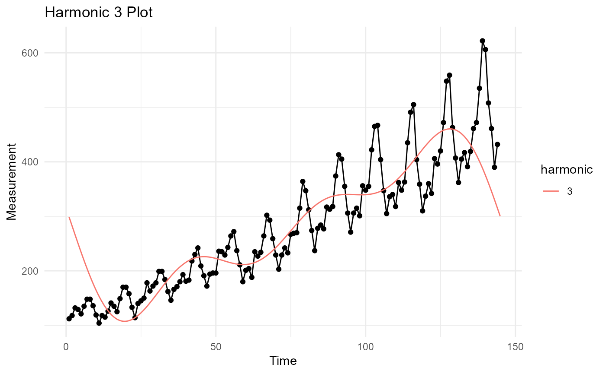

Perform an fft using stats::fft() and return a tidier style output list with plots.
tidy_fft( .data, .date_col, .value_col, .frequency = 12L, .harmonics = 1L, .upsampling = 10L )
Arguments
| .data | The data.frame/tibble you will pass for analysis. |
|---|---|
| .date_col | The column that holds the date. |
| .value_col | The column that holds the data to be analyzed. |
| .frequency | The frequency of the data, 12 = monthly for example. |
| .harmonics | How many harmonic waves do you want to produce. |
| .upsampling | The up sampling of the time series. |
Value
A list object returned invisibly.
Details
This function will perform a few different things, but primarily it will
compute the Fast Discrete Fourier Transform (FFT) using stats::fft(). The
formula is given as:
$$y[h] = sum_{k=1}^n z[k]*exp(-2*pi*1i*(k-1)*(h-1)/n)$$
There are many items returned inside of a list invisibly. There are four primary categories of data returned in the list. Below are the primary categories and the items inside of them.
data:
data
error_data
input_vector
maximum_harmonic_tbl
differenced_value_tbl
dff_tbl
ts_obj
plots:
harmonic_plot
diff_plot
max_har_plot
harmonic_plotly
max_har_plotly
parameters:
harmonics
upsampling
start_date
end_date
freq
model:
m
harmonic_obj
harmonic_model
model_summary
Author
Steven P. Sanderson II, MPH
Examples
#> #>#> #> #>#> #> #>#> #> #>dat <- healthyR_data%>% filter(ip_op_flag == 'I') %>% summarise_by_time( .date_var = visit_end_date_time, .by = "month", value = n() ) %>% filter_by_time( .date_var = visit_end_date_time, .start_date = "2015", .end_date = "2019" ) a <- tidy_fft( .data = dat, .value_col = value, .date_col = visit_end_date_time, .harmonics = 3, .frequency = 12 )#> #> #>a$plots$max_har_plot#> Warning: Removed 540 row(s) containing missing values (geom_path).#> Warning: Removed 540 rows containing missing values (geom_point).a$plots$harmonic_plot#> Warning: Removed 1620 row(s) containing missing values (geom_path).#> Warning: Removed 1620 rows containing missing values (geom_point).